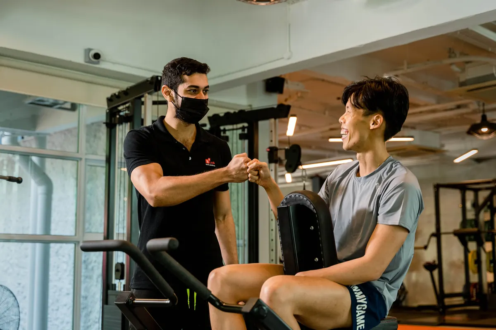
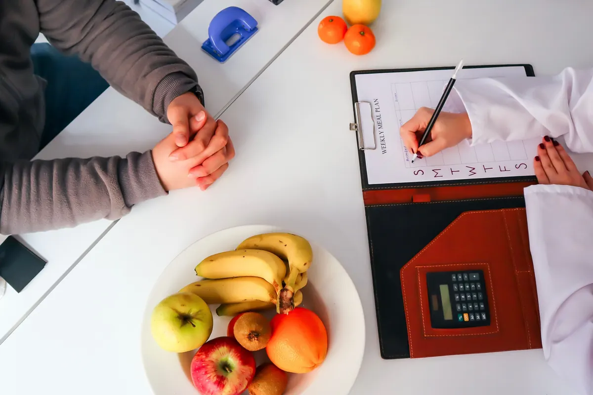
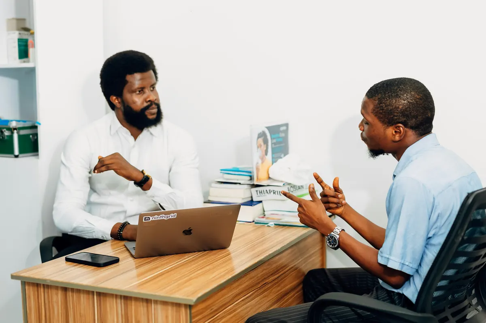

Fitness, nutrition, or clinical practice — if you manage clients, plans, and check-ins, Wazen fits how you work.

Program workouts, track adherence, and keep every client’s training on schedule.

Set macro targets and meal plans — and see exactly how clients follow them.

Manage nutrition, supplement, and medication plans with structured check-ins.